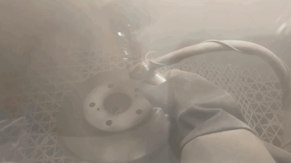
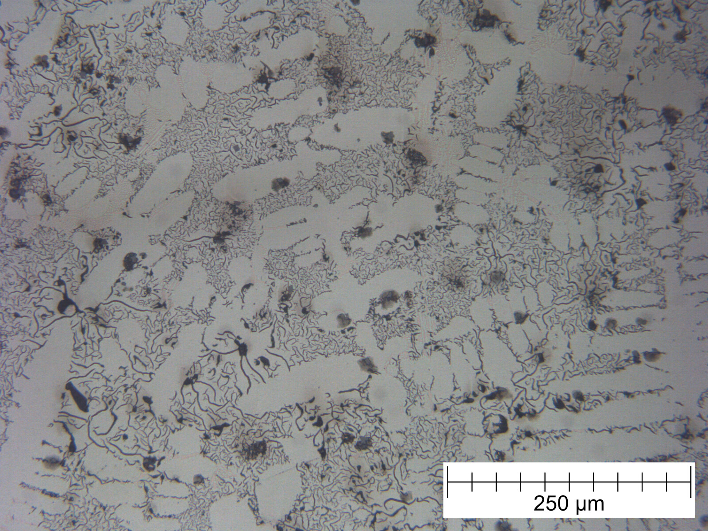
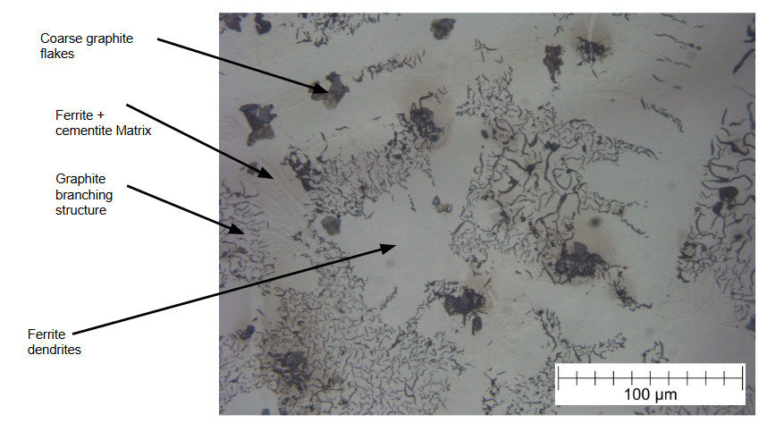
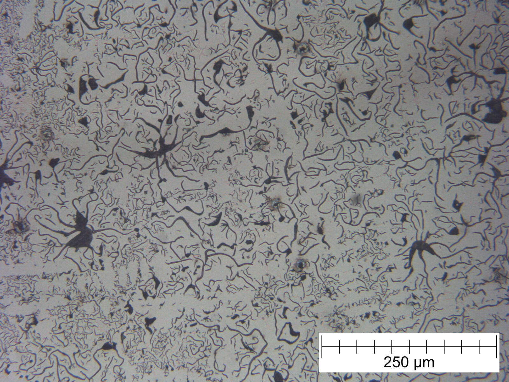
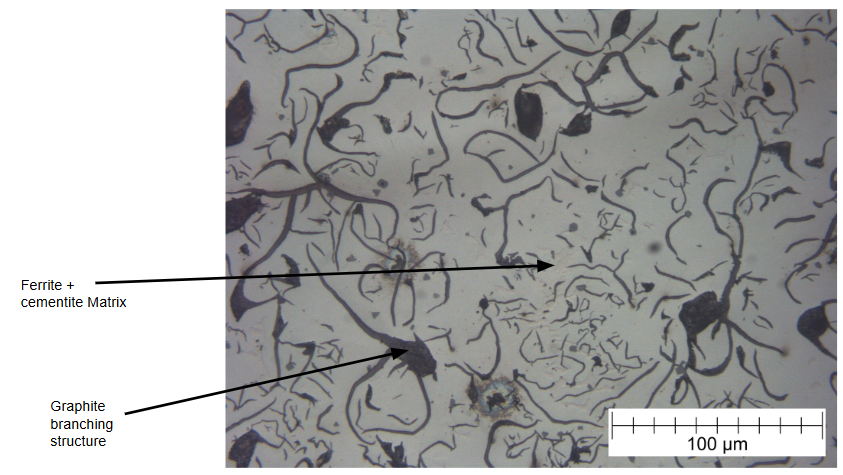

02 · Casting in the lab
From brake rotor to ingot
| Element | Wt % | ± 2σ |
|---|---|---|
| Fe | 95.767 | 0.074 |
| Si | 3.051 | 0.066 |
| Mn | 0.691 | 0.022 |
| S | 0.189 | 0.012 |
| Cu | 0.082 | 0.010 |
| P | 0.065 | 0.013 |
| Cr | 0.064 | 0.007 |
| Ti | 0.046 | 0.016 |
| Ni | 0.020 | 0.007 |
| V | 0.014 | 0.008 |
| Mo | 0.006 | 0.001 |
| Nb | 0.005 | 0.001 |
We confirmed the brake rotor was very likely gray cast iron due to the content of iron and Si at 3.05%.
To make our sample ingots, we used a recycled brake rotor from a car. We cut it into small pieces, and melted the iron-carbon alloy using a furnace. We then poured the material into an ingot mold. In the inoculant sample, we added the silicon to the flask during the molten phase.



To analyze our ingot, we made cross sectional pucks and used the optical microscopes to observe the microstructure.
Physically, this project made use of the lab furnace and flask, and the optical microscope.
Under the microscope
Material Analysis: Reality
After creating our ingots, we gathered information on their compositions using the XRF.
| Element | Wt % | ± 2σ |
|---|---|---|
| Fe | 95.388 | 0.068 |
| Si | 2.495 | 0.058 |
| S | 1.037 | 0.021 |
| Mn | 0.854 | 0.023 |
| Cr | 0.061 | 0.007 |
| P | 0.048 | 0.012 |
| Cu | 0.048 | 0.009 |
| Ti | 0.028 | 0.015 |
| Ni | 0.020 | 0.007 |
| Sn | 0.010 | 0.007 |
| Mo | 0.005 | 0.001 |
| Nb | 0.005 | 0.001 |
| Element | Wt % | ± 2σ |
|---|---|---|
| Fe | 96.444 | 0.062 |
| Si | 2.183 | 0.055 |
| S | 0.693 | 0.018 |
| Mn | 0.477 | 0.019 |
| P | 0.076 | 0.013 |
| Cr | 0.052 | 0.007 |
| Cu | 0.046 | 0.008 |
| Ni | 0.016 | 0.006 |
| Mo | 0.006 | 0.001 |
| Nb | 0.004 | 0.001 |
| Element | Wt % | ± 2σ |
|---|---|---|
| Fe | 76.45 | 0.15 |
| Si | 18.31 | 0.14 |
| Mn | 4.856 | 0.060 |
| Cr | 0.114 | 0.010 |
| Cu | 0.106 | 0.012 |
| Ti | 0.066 | 0.021 |
| Zn | 0.035 | 0.006 |
| V | 0.025 | 0.011 |
| Sn | 0.013 | 0.008 |
| Nb | 0.012 | 0.001 |
| Sr | 0.006 | 0.001 |
| Zr | 0.004 | 0.001 |
| Mo | 0.003 | 0.001 |
These tables show that the brake rotor and ingot without silicon are both mostly iron, though casting lowered the silicon (3.05% to 2.50%) and raised the sulfur (0.19% to 1.04%). The ingot with the inclusion has different concentrations of silicon in different locations.
To analyze our ingot cross sections, we will observe their optical micrographs.
Without silicon


In Figure 4, we can clearly see the ferrite dendrites (tree-like structures) that form when the ferrite goes from the liquid to the solid phase. We also observe many dark flakes, as well as dark branching structures. This is the carbon separating from the iron and forming graphite. In Figure 5 we zoom in and label these structures, and we also additionally observe a lighter matrix structure. This is characteristic of a ferrite and cementite microstructure. Without the inclusion, we can conclude that we have a mixture of ferrite, graphite, and some cementite in the final structure.
With silicon


Now looking at the silicon inclusion, we see the same ferrite dendrites that we observed in the other sample. Additionally, we no longer have the graphite “chunks” that were present in the previous sample. In Figure 7, we observe a very minimal amount of cementite in comparison to the non-silicon inclusion ingot. Comparing Figure 6 with Figure 4, the graphite appears to make up more of the material in the silicon inclusion sample than the non-silicon sample.
All of these changes are consistent with what we expect to see with added silicon. The silicon causes the solubility limit of carbon in the iron to decrease, which promotes the formation of graphite rather than cementite [3].
One other thing we would expect to see as a result of the silicon inclusion is smaller grains. We didn’t control the cooling between the two samples; we did one more heating cycle on the cast iron with the silicon inclusion. This would lead to larger grains due to the larger temperature change. The grain size appears smaller in the non-silicon sample, but due to the difference in cooling we cannot come to a definitive conclusion on the impact the silicon has on grain size. Additionally, not all of the silicon may have been fully inoculated; visually observing the ingot shows clumps have gathered at the top, so the area we look at of the cross section may be skewed.
What it means
Mechanical Properties
The microstructure without the silicon inclusion has smaller grains, meaning that it is more ductile/less brittle than the sample with the inclusion. The thermal conductivity of the silicon sample will be higher than the non-silicon sample because the graphite flakes exhibit high thermal conductivity, and their increased presence in the material composition in the silicon sample allows for a very efficient 3D network for heat transfer. The tighter and smaller grains of graphite in the non-silicon sample lead to a reduced thermal conductivity.
Therefore, the tradeoff of the silicon inclusion is that it results in a more thermally conductive material, but with lower ductility.
The mechanical properties would change if we cooled it differently.
Sources
- Futas, P., Pribulova, A., Petrik, J., Blasko, P., Junakova, A., et al. (2023). Metallurgical quality of cast iron made from steel scrap and possibilities of its improvement. Metals, 13(1), 27. doi:10.3390/met13010027